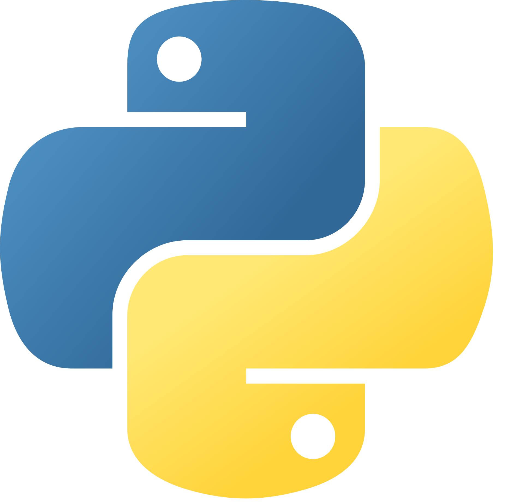

• Programski jezik Pajton
‣ Guido van Rossum, 33 godine.
‣ Holandski programer zaposlen u istraživačkom centru CWI.
‣ Započeo ga je sam, kao hobi-projekat.
‣ Razvoj započet decembra 1989. godine.
‣ Inspirisan programskim jezikom ABC.
‣ Naziv dobio po humorističkoj seriji "Monty Python".
‣ Danas ga razvija međunarodna zajednica programera.
‣ Pajton 0.9.1: 20.02.1991.
‣ Pajton 3.14.8: 30.09.2026.